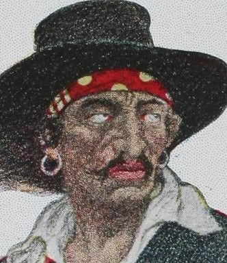

This is info about random things i can find.
The five-limbed body of a starfish radiates around a central disc. If a starfish gets split into five pieces, each piece can survive and regrow itself but only if it contains part of that central disc.

Bactrian camels, also called two-humped camels, can drink up to 88 pints of water (50 liters).Camels love water so much that they will even drink salty water.

A polar bear's hair is not white it's colorless Its strands are thick, hollow, and reflect light. This is what makes them appear white. Polar bears actually have black skin underneath that thick coat of fur, which helps them soak up the sun's warm rays in the chilly Arctic.

Largest of the flamingos, the American Flamingo is the only species of flamingo with any dimorphism. Though there is no difference in color or plumage, the males are significantly taller than the females. There is no real difference between the sexes in other species. They have large, rounded bodies balanced on very straight and very long legs (although the thigh itself is only 3 inches long). The flamingo’s beak, the feature most recognized, sets them apart. A unique shape, with a 45-degree angle in the middle, it facilitates the plumping filtration. The beaks of the chicks are straight.

Viruses evolve faster than any other living organism When one copy of the virus genome gets into a host cell, it multiplies incredibly quickly. Within hours, thousands of copies can be made from a single virus. Since viruses cycle through multiple generations so quickly, they end up making frequent mistakes when copying their genetic information.
Viruses are not really alive viruses operate on the border of life and non-life. Unlike organisms that are clearly alive, viruses dont need food, and they have no metabolism. They have only a handful of genes (often as few as just three or four), unlike bacteria, which have about a thousand genes, and higher forms of life like humans with tens of thousands of genes
some pirates did have hooks and wooden pegs.There are a few other fictitious-sounding details about pirates that are accurate. For example, battling pirates surely lost limbs from time to time and some of them would have replaced their absent appendages with a hook or a wooden peg,members of the crew … received compensation for the loss of body parts in action—an early form of worker's compensation.
Pirates wore earrings to ward off seasickness.When pirates accessorized with earrings, they weren't just trying to be fashionable. According to National Geographic, sailors believed that applying pressure to the earlobe would ward off seasickness. In many cases, the pirates would accomplish this by popping on an earring. Unfortunately, though your inner ears do affect your sense of balance, putting earrings in your earlobes does nothing to mitigate seasickness.
